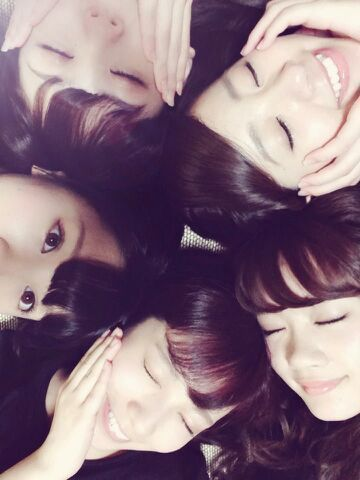

| 2014/08 24 Sun | 真夏の全国ツアー〜中盤戦〜 Ro tty。 |
おはよ〜ございま〜す\(#^.^#)/
まにだよ. ろってぃ−だよ..*
今日は 仙台に来ております！
真夏の全国ツアー 仙台 /////
仙台の皆さん 今日はよろしくお願い致します \☆/
時計周りで、大和 まひろ 畠中 ゆうり あみです..*

一昨日 乃木天の収録があって、その時 畳の上で仰向きになって撮ったよ..*
乃木天 毎週金曜日だから見てねん♪
TVじゃなくて Web番組やからよ..*
せいらは バニラアイスが大好きだよ.
私は ビスケットアイスが大好きだよ.
あとまひろ まあやのことも好きだよ..*
一昨日 二人でお風呂に入ったよ..*
まあやが 「まに村歌って 歌って」ってゆうから歌ったら褒めてくれたよ。優しい子だよ。
何なんだ今日のblogは... 笑
たんたんと してるなあ (゜゜;)＼(--;)
仙台の皆さん ろってぃーのことちゃんと見て帰ってね(/-＼*) 少しでも好きになってくれたら 嬉しいんよ〜

のし..*
コメント(251)
2014/08/24 07:48